Справочник по системному программированию · модуль 0 · лабораторная работа
0.5
Процесс
изнутри
В этой лабораторной работе своя программа на C запускается и рассматривается в служебной программе системы: номер процесса, память, открытые файлы, загруженные библиотеки. Затем процесс завершается из монитора, и видно, чем это отличается от обычного выхода. Во второй части то же делается с программой на Python. Каждый шаг состоит из действия, кадра экрана после действия и объяснения: что на кадре и что изменилось. Шаги показаны для системы, выбранной переключателем вверху страницы.
- Пара
- 1, вторая половина; задание к модулю 0
- Время
- 35–40 минут
- Программы
- Диспетчер задач, Process ExplorerМониторинг системы, ТерминалСистемный монитор GNOME, терминал
- Сдать
hello.c,hello.py,report.mdс ответами на вопросы шагов
§1Подготовка
Для работы нужны компилятор C, Python и два файла: hello.c и hello.py из главы 0.1, §4. Программа печатает свой номер процесса и ждёт нажатия Enter. Пока она ждёт, процесс существует, и его можно рассмотреть в служебной программе. Ниже — установка и проверка для выбранной системы; запускать программу пока не нужно, это шаг 1.
- Установите компилятор
Откройте страницу visualstudio.microsoft.com/downloads, в разделе Tools for Visual Studio скачайте Build Tools for Visual Studio. В установщике отметьте рабочую нагрузку Разработка классических приложений на C++ (Desktop development with C++) и нажмите Установить. Python 3.14 скачайте с python.org и при установке отметьте Add python.exe to PATH.
Место под кадр с компьютера в классеVisual Studio Installer, вкладка «Рабочие нагрузки»: отмечена «Разработка классических приложений на C++», справа в списке компонентов отмечены MSVC и Windows 11 SDK.
- Откройте командную строку компилятора
В меню «Пуск» найдите x64 Native Tools Command Prompt for VS. В этой командной строке настроены пути к компилятору; в обычной командной строке и в PowerShell команда
clне найдётся. - Создайте файл программы на C
Выполните команды и вставьте в Блокнот код ниже. Блокнот спросит, создать ли новый файл, — ответьте «Да».
Командная строка mkdir C:\syspro\pair01 cd C:\syspro\pair01 notepad hello.c
hello.c #include <windows.h> #include <stdio.h> int main(void) { DWORD pid = GetCurrentProcessId(); printf("agent v0, pid=%lu\n", pid); printf("Press Enter to exit\n"); getchar(); return 0; }
- Проверьте компилятор
Командная строка cl
Без аргументов
clпечатает название и версию, напримерMicrosoft (R) C/C++ Optimizing Compiler Version 19.44…. Эту строку запишите в отчёт. - Создайте файл hello.py рядом
Вторая программа вызывает ту же системную функцию из Python через
ctypes.hello.py import ctypes k32 = ctypes.windll.kernel32 k32.GetCurrentProcessId.restype = ctypes.c_ulong print("agent v0 (python), pid=", k32.GetCurrentProcessId()) input("Press Enter to exit")
- Установите компилятор
Откройте Терминал и выполните команду ниже. Появится окно установки Command Line Tools — нажмите Установить. В набор входят компилятор
clang, отладчикlldbиgit. Python 3.14 скачайте с python.org.Терминал xcode-select --install
- Создайте файл программы на C
Терминал mkdir -p ~/syspro/pair01 cd ~/syspro/pair01 open -e hello.c
Если файла ещё нет, создайте его командой
touch hello.cпередopen -e. Вставьте код в TextEdit и сохраните.hello.c #include <stdio.h> #include <unistd.h> int main(void) { pid_t pid = getpid(); printf("agent v0, pid=%d\n", (int)pid); printf("Press Enter to exit\n"); getchar(); return 0; }
- Проверьте компилятор
Терминал clang --version
Первая строка — версия компилятора, например
Apple clang version 17.0.0. Её запишите в отчёт. - Создайте файл hello.py рядом
Вторая программа вызывает ту же системную функцию из Python через
ctypes.hello.py import ctypes, ctypes.util libc = ctypes.CDLL(ctypes.util.find_library("c")) libc.getpid.restype = ctypes.c_int print("agent v0 (python), pid=", libc.getpid()) input("Press Enter to exit")
- Установите компилятор и Python
В Ubuntu и Debian компилятор
gcc,makeи заголовочные файлы входят в пакетbuild-essential. В других дистрибутивах пакет называется иначе, напримерbase-develв Arch.Терминал sudo apt update sudo apt install build-essential python3
- Создайте файл программы на C
Терминал mkdir -p ~/syspro/pair01 cd ~/syspro/pair01 nano hello.c
Вставьте код, сохраните сочетанием Ctrl+O и выйдите Ctrl+X.
hello.c #include <stdio.h> #include <unistd.h> int main(void) { pid_t pid = getpid(); printf("agent v0, pid=%d\n", (int)pid); printf("Press Enter to exit\n"); getchar(); return 0; }
- Проверьте компилятор
Терминал gcc --version
Первая строка — версия компилятора, например
gcc (Ubuntu 13.3.0-6ubuntu2~24.04.1) 13.3.0. Её запишите в отчёт. - Создайте файл hello.py рядом
Вторая программа вызывает ту же системную функцию из Python через
ctypes.hello.py import ctypes, ctypes.util libc = ctypes.CDLL(ctypes.util.find_library("c")) libc.getpid.restype = ctypes.c_int print("agent v0 (python), pid=", libc.getpid()) input("Press Enter to exit")
Если компилятор пишет, что не находит windows.h
В установщике не отмечен Windows SDK. Откройте Visual Studio Installer, нажмите «Изменить» у Build Tools и отметьте в рабочей нагрузке C++ пункт Windows 11 SDK.
Если команда clang пишет, что не найдены инструменты разработчика
Command Line Tools не установлены или установлены не до конца. Повторите xcode-select --install и дождитесь окончания установки; путь к инструментам показывает команда xcode-select -p.
Служебная программа-монитор показывает процессы, которые сейчас работают на компьютере. В Windows это Диспетчер задач; для подробностей — Process Explorer из набора Sysinternals: его скачивают с сайта Microsoft, установка не нужна.В macOS это Мониторинг системы в папке Программы → Утилиты.В Ubuntu с GNOME это Системный монитор; если его нет, он ставится командой sudo apt install gnome-system-monitor. Все сведения монитор получает у ядра теми же системными функциями, которые в курсе вызывает агент.
Вверху шага — действие. Ниже — кадр экрана после действия; красные рамки отмечают места, о которых идёт речь, номера рамок повторяются в тексте. Слева под кадром — что на нём видно, справа — что изменилось по сравнению с прошлым шагом. Строка «В отчёт» — что записать в report.md. Номера процессов на вашем экране будут другими.
§2Часть 1. Программа на C
В первой части программа на C запускается, находится в мониторе по номеру процесса, рассматривается изнутри и завершается из монитора.
-
Соберите и запустите программу на CВ командной строке x64 Native Tools Command Prompt for VS перейдите в папку
C:\syspro\pair01с файломhello.cиз главы 0.4 и выполнитеcl hello.c, затемhello.exe. Окно командной строки оставьте открытым.Соберите и запустите программу на CВ Терминале перейдите в папку~/syspro/pair01с файломhello.cиз главы 0.4 и выполнитеclang -o hello hello.c && ./hello. Окно Терминала оставьте открытым.Соберите и запустите программу на CВ терминале перейдите в папку~/syspro/pair01с файломhello.cиз главы 0.4 и выполнитеgcc -o hello hello.c && ./hello. Окно терминала оставьте открытым и прижмите к левому краю экрана: Super+←.Место под кадр · WindowsКомандная строка Native Tools: вывод cl, затем строки «agent v0, pid=…» и «Press Enter to exit», курсор ждёт ввода.
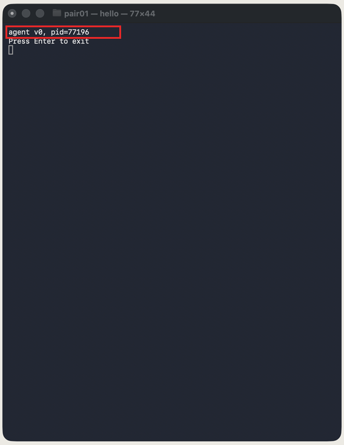
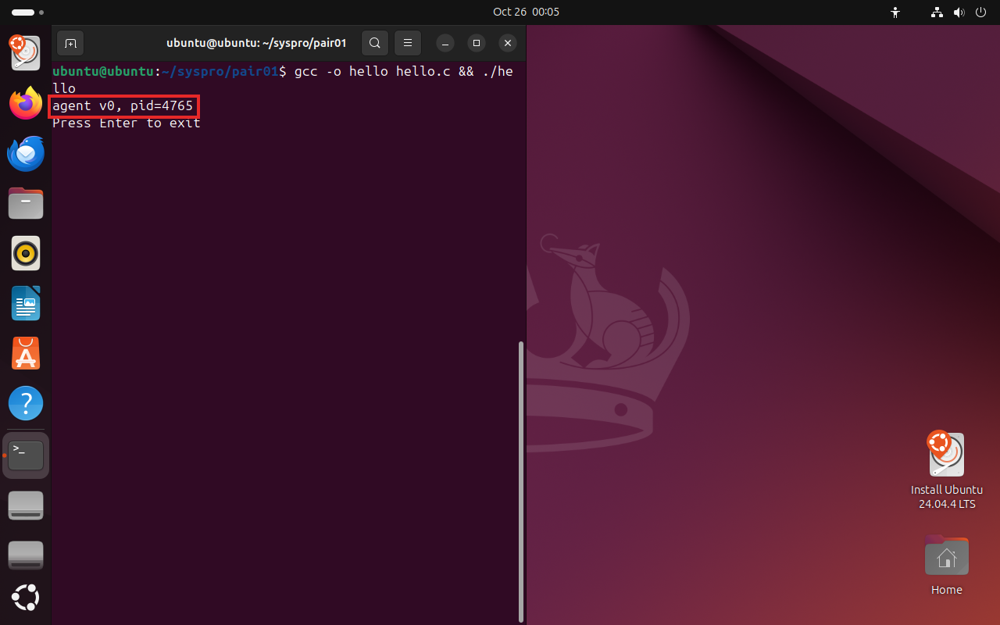
Что на кадреПрограмма напечатала свой номер процесса — PID — и ждёт нажатия Enter.
Что изменилосьПрограмма запущена и стала процессом. Пока она ждёт Enter, процесс существует, и его можно найти в любой служебной программе.
Что на кадреКомпилятор clang собрал файл
hello, программа напечатала свой номер процесса и ждёт нажатия Enter: курсор стоит на пустой строке. В заголовке окна — имя запущенной программы.Что изменилосьПрограмма стала процессом. Пока она ждёт Enter, процесс существует, и его можно найти в любой служебной программе. Номер у вас будет другим: система выдаёт его при каждом запуске. Дальше на кадрах — запуск с номером 39020.
Что на кадреКомпилятор gcc собрал файл
helloи сразу запустил его. Программа напечаталаpid=4765и ждёт нажатия Enter: курсор стоит на пустой строке.Что изменилосьПрограмма стала процессом с номером 4765. Пока она ждёт Enter, процесс существует, и его можно найти в любой служебной программе. У вас номер будет другим: система выдаёт его при каждом запуске.
В отчёт. номер процесса из вывода программы.
-
Откройте Диспетчер задач на вкладке «Подробности»Нажмите Ctrl+Shift+Esc. Слева выберите Подробности. В таблице есть столбец ИД процесса — это тот же PID.Откройте Мониторинг системыНажмите ⌘+Пробел, наберите «Мониторинг системы» и нажмите Return. Откройте вкладку ЦП. Столбец PID — номер процесса; если его нет, включите его в меню Вид → Столбцы.Откройте Системный мониторНажмите Alt+F2, наберите
gnome-system-monitorи нажмите Enter, затем прижмите окно к правому краю: Super+→. В английском интерфейсе программа называется System Monitor, вкладка процессов — Processes.Место под кадр · WindowsДиспетчер задач, вкладка «Подробности»: таблица процессов со столбцами «Имя», «ИД процесса», «Состояние», «Пользователь», «ЦП», «Память».
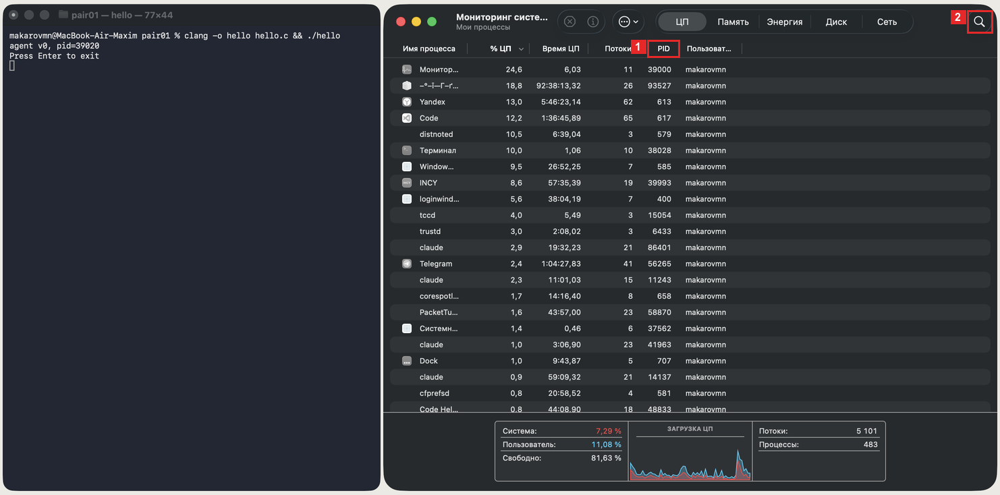
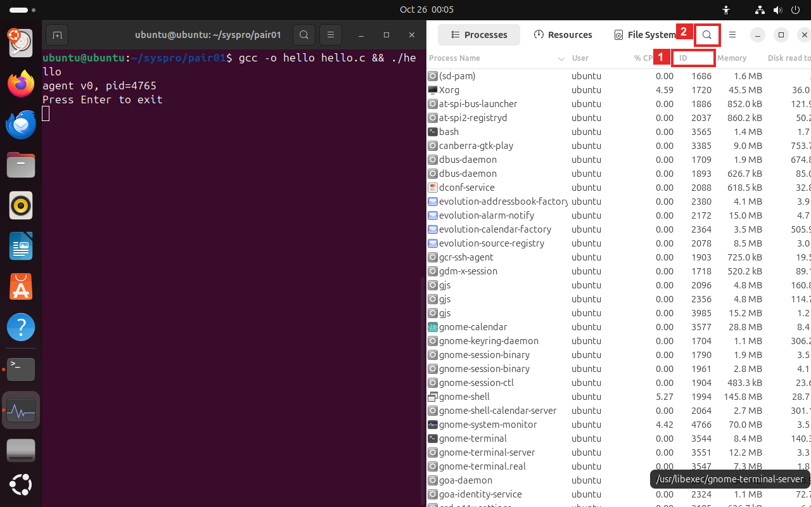
Что на кадреСписок всех процессов компьютера: системные службы, программы пользователя, сам Диспетчер задач.
Что изменилосьСлева терминал с запущенной программой, справа — программа, которая показывает процессы. Своего процесса в длинном списке пока не видно.
Что на кадреВкладка ЦП со списком процессов пользователя, подзаголовок окна — «Мои процессы». 1 — столбец PID. 2 — кнопка поиска. Внизу — загрузка процессора, число процессов и потоков.
Что изменилосьСправа появилась программа, которая показывает процессы. Процессов несколько сотен, и
helloв видимой части списка нет. Если столбца PID нет, включите его: Вид → Столбцы → ID процесса.Что на кадреВкладка Processes со списком процессов пользователя: Xorg, dbus-daemon, gnome-shell и другие. 1 — столбец ID, номер процесса. 2 — кнопка поиска.
Что изменилосьСправа появилась программа, которая показывает процессы. В списке есть и сам Системный монитор (gnome-system-monitor), и терминал. Процесса
helloв видимой части списка нет: процессов несколько десятков. -
Найдите свой процессВ строке поиска вверху Диспетчера задач наберите
hello. В списке останетсяhello.exe. В Windows 10 строки поиска нет: щёлкните по заголовку столбца «Имя», чтобы отсортировать список, и найдитеhello.exeпо алфавиту.Найдите свой процессВ поле поиска в правом верхнем углу окна наберитеhello.Найдите свой процессНажмите Ctrl+F и наберитеhello, затем стрелкой ↓ выделите найденную строку.Место под кадр · WindowsДиспетчер задач, вкладка «Подробности»: в поиске «hello», в таблице одна строка hello.exe; рамка на столбце «ИД процесса» и на выводе в командной строке.
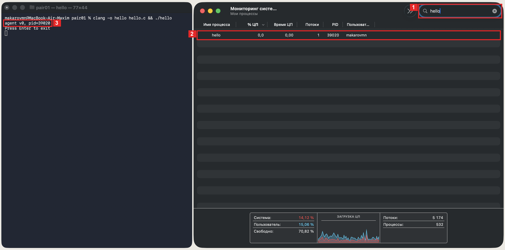
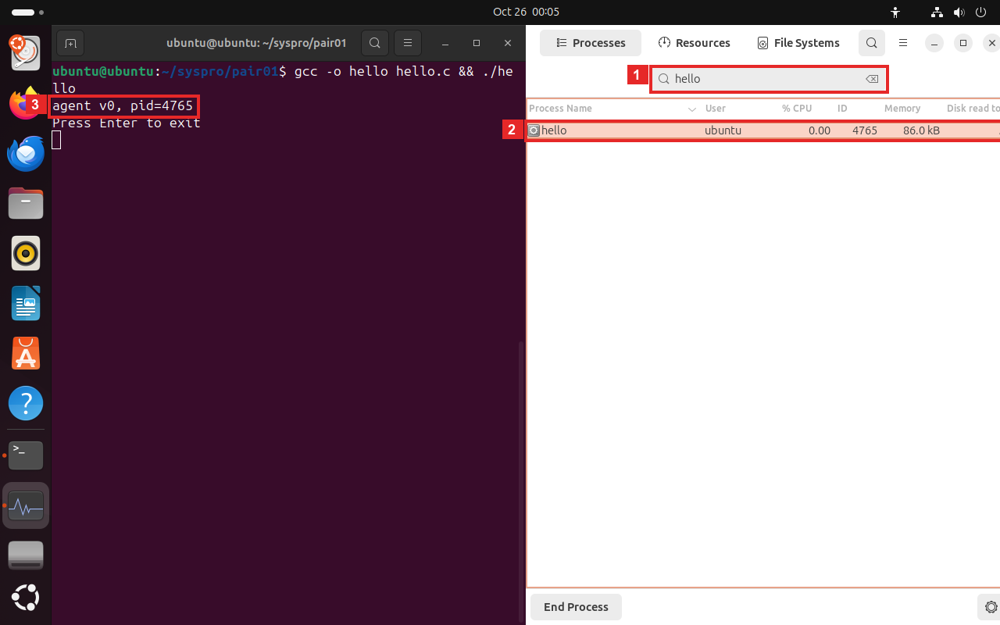
Что на кадреОдна строка
hello.exe. Число в столбце «ИД процесса» совпадает с числом в командной строке.Что изменилосьСписок отфильтрован по имени. Теперь видно, что Диспетчер задач и сама программа называют один и тот же номер.
Что на кадре1 — поиск
hello. 2 — единственная строка: процессhello, % ЦП 0,0, один поток, PID 39020. 3 — тот же номер в выводе программы.Что изменилосьИз сотен процессов осталась одна строка. Номер в столбце PID совпал с номером, который программа получила функцией
getpid: программа и монитор спрашивают у ядра одно и то же. У программы один поток — главный.Что на кадре1 — строка поиска с текстом
hello. 2 — единственная найденная строка: процессhello, пользователь ubuntu, ID 4765, память 86 кБ. 3 — тот же номер в выводе программы.Что изменилосьИз нескольких десятков процессов осталась одна строка. Номер в столбце ID совпал с номером, который программа получила функцией
getpid: программа и монитор спрашивают у ядра одно и то же.В отчёт. совпал ли номер в мониторе с номером в выводе программы; сколько памяти занимает процесс.
-
Откройте свойства процесса в Process ExplorerПодробных свойств процесса в Диспетчере задач нет. Запустите Process Explorer из набора Sysinternals от имени администратора, нажмите Ctrl+F, найдите
hello.exeи дважды щёлкните по нему. Откройте вкладку Performance.Откройте окно процессаДважды щёлкните по строкеhelloили выделите её и нажмите ⌘+I. Откроется окно процесса с вкладками Память, Статистика, Открытые файлы и порты. Начните со вкладки Память.Откройте свойства процессаПри выделенной строкеhelloнажмите Alt+Enter или выберите Properties в меню правой кнопки.Место под кадр · WindowsProcess Explorer, окно свойств hello.exe, вкладка Performance: Private Bytes, Working Set, Handles, Threads; рамки на Working Set и Threads.
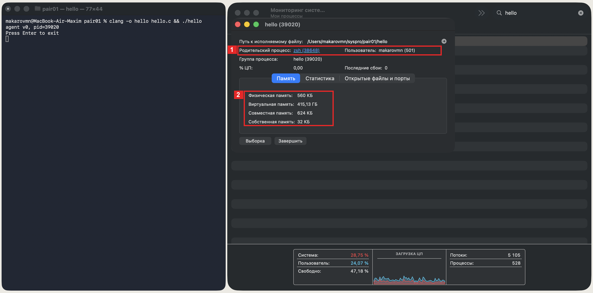
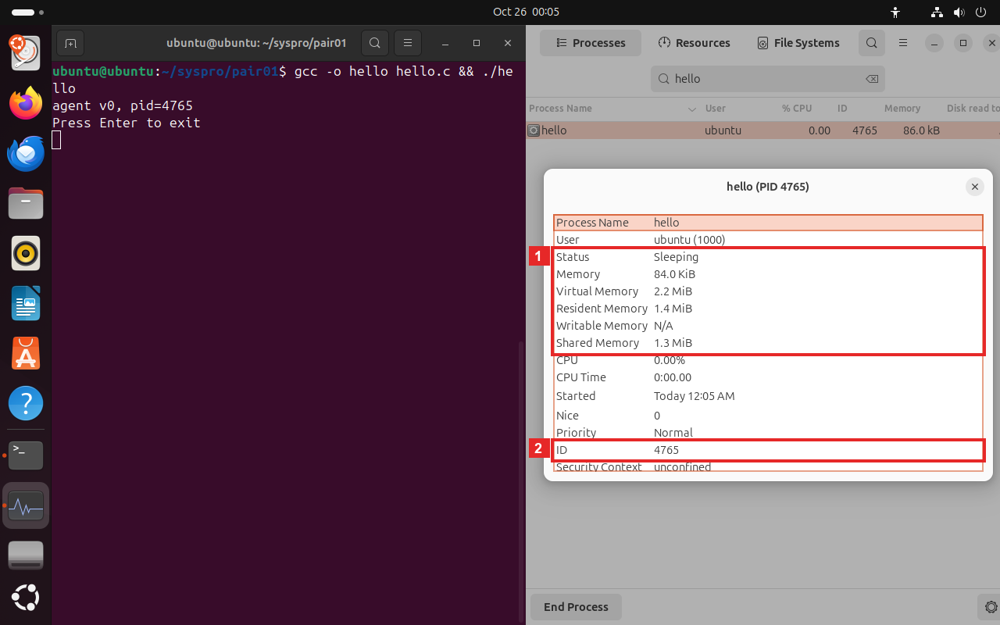
Что на кадреСчётчики процесса: сколько памяти занято (Private Bytes, Working Set), сколько у процесса дескрипторов (Handles) и потоков (Threads).
Что изменилосьВместо одной строки таблицы видны подробности одного процесса. Процессорное время близко к нулю: программа ничего не считает, а ждёт ввода.
Что на кадреОкно
hello (39020): путь к файлу программы, пользователь. 1 — родительский процесс zsh (38648): оболочка Терминала, которая запустила программу. 2 — память: физическая 560 КБ, виртуальная 415,13 ГБ, совместная 624 КБ, собственная 32 КБ.Что изменилосьВместо одной строки таблицы видны подробности одного процесса. Виртуальной памяти 415 ГБ — это зарезервированное адресное пространство, а не занятая память: в оперативной памяти лежит 560 КБ, из них собственных у программы 32 КБ. Остальное — общие системные библиотеки.
Что на кадреОкно
hello (PID 4765). 1 — статус Sleeping (спит), память: виртуальная 2,2 МиБ, в оперативной памяти (Resident) 1,4 МиБ, из них общая с другими процессами (Shared) 1,3 МиБ. Процессорное время 0:00.00. 2 — ID 4765.Что изменилосьВместо одной строки таблицы видны подробности одного процесса. Статус Sleeping означает, что процесс ждёт события — нажатия Enter — и не тратит процессор. Почти вся занятая память общая: это библиотека C, которую используют и другие программы.
В отчёт. статус процесса и процессорное время; объясните одной фразой, почему процессорное время равно нулю.
-
Посмотрите дескрипторы процессаВ главном окне Process Explorer выделите
hello.exeи нажмите Ctrl+H: в нижней панели появится список дескрипторов (Handles).Посмотрите открытые файлыВ окне процесса откройте вкладку Открытые файлы и порты.Посмотрите открытые файлыЗакройте окно свойств клавишей Esc и нажмите Ctrl+O (Open Files).Место под кадр · WindowsProcess Explorer, нижняя панель Handles для hello.exe: строки типа File с \Device\ConDrv, строки Key, Event и другие; рамка на строках \Device\ConDrv.
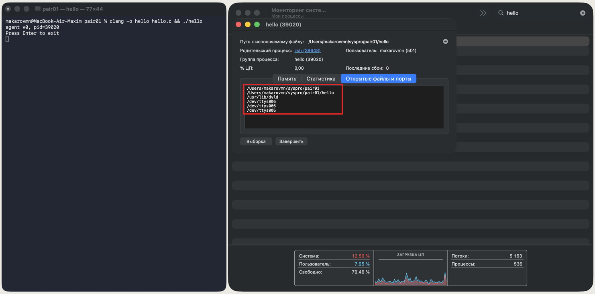
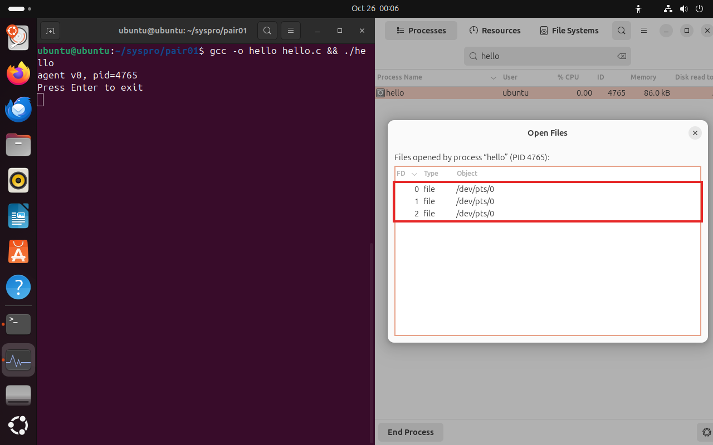
Что на кадреДескрипторы процесса: открытые объекты ядра. Строки
\Device\ConDrv— связь с окном консоли, через которую программа печатает и читает ввод.Что изменилосьВидно, что даже программа из пяти строк держит открытые объекты ядра. Ввод и вывод
printfиgetcharидут через дескрипторы консоли.Что на кадреВкладка Открытые файлы и порты: рабочая папка
~/syspro/pair01, файл программыhello, загрузчик/usr/lib/dyldи три строки/dev/ttys006— устройство окна Терминала.Что изменилосьТри строки
/dev/ttys006— дескрипторы 0, 1 и 2: стандартный ввод, вывод и вывод ошибок. Через нихprintfпишет в окно Терминала, аgetcharчитает из него. Других файлов программа не открывала.Что на кадреОкно Open Files для
hello: три дескриптора, FD 0, 1 и 2, все указывают на/dev/pts/0— устройство терминала.Что изменилосьВидно, куда пишет
printfи откуда читаетgetchar: дескриптор 0 — стандартный ввод, 1 — вывод, 2 — вывод ошибок. Все три ведут в окно терминала слева. Других файлов программа не открывала.В отчёт. сколько открытых файлов (дескрипторов) у процесса и куда они ведут.
-
Посмотрите загруженные библиотекиНажмите Ctrl+D: нижняя панель Process Explorer покажет библиотеки DLL процесса.Посмотрите загруженные библиотекиБиблиотеки процесса Мониторинг системы не показывает. Откройте второе окно Терминала (⌘+N) и выполните команду, подставив свой номер процесса:
vmmap <PID> | grep __TEXT | awk '{print $NF}' | grep dylib | sort -u.Посмотрите карту памятиЗакройте окно файлов клавишей Esc и нажмите Ctrl+M (Memory Maps).Место под кадр · WindowsProcess Explorer, нижняя панель DLLs для hello.exe: hello.exe, ntdll.dll, kernel32.dll, KernelBase.dll; рамка на трёх системных библиотеках.
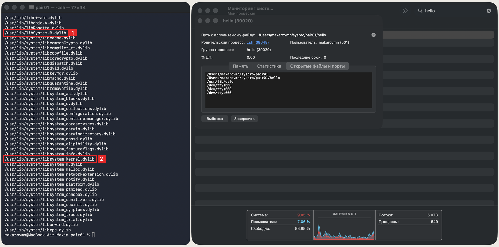
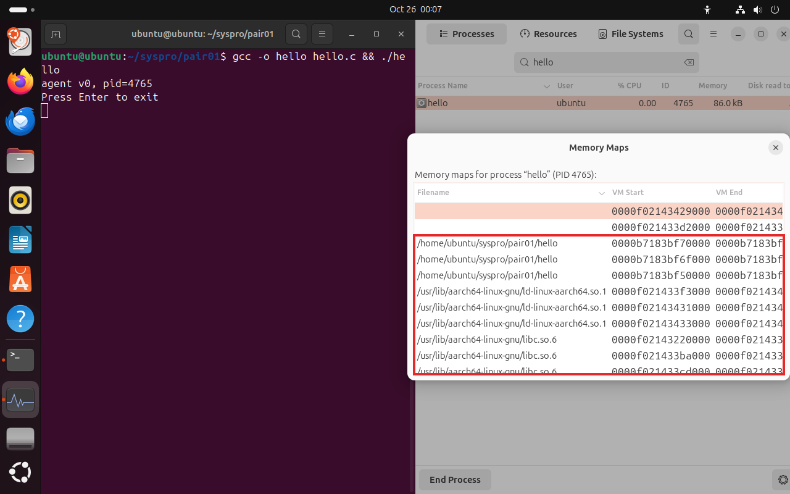
Что на кадреБиблиотеки, загруженные в процесс: сам
hello.exeи системныеntdll.dll,kernel32.dll,KernelBase.dll.Что изменилосьЭто те самые библиотеки из главы 0.1, §4: через них программа обращается к ядру. Их никто не подключал явно — Windows загружает их в каждый процесс.
Что на кадреСписок библиотек, код которых (
__TEXT) загружен в процесс: 44 файла.dylib. 1 —libSystem.B.dylib, общая библиотека macOS. 2 —libsystem_kernel.dylib, переход в ядро.Что изменилосьЭто библиотеки из главы 0.1, §4. Программа из пяти строк подключила 44 библиотеки:
libSystemсобрана из частей —libsystem_c,libsystem_kernel,libsystem_mallocи других, — и загружаются все. Они лежат в общем кэше, который используют все программы macOS, поэтому память почти не тратят.Что на кадреОкно Memory Maps: файл
helloподключён в память трижды (код, данные только для чтения, изменяемые данные), затем загрузчикld-linux-aarch64.so.1и библиотекаlibc.so.6. Строки без имени — куча и стек.Что изменилосьЭто те самые библиотеки из главы 0.1, §4:
libc.so.6содержитprintf,getcharи обёрткуgetpid. В выводе/proc/4765/mapsу этого процесса 16 строк.В отчёт. какие системные библиотеки загружены в процесс.
-
Завершите процесс из Диспетчера задачВернитесь в Диспетчер задач, щёлкните правой кнопкой по
hello.exeи выберите Снять задачу.Завершите процесс из Мониторинга системыВ окне процесса нажмите кнопку Завершить внизу. В главном окне то же делает кнопка ⓧ на панели инструментов.Завершите процесс из Системного монитораЗакройте карту памяти клавишей Esc, выделитеhelloи нажмите кнопку End Process внизу окна.Место под кадр · WindowsДиспетчер задач, меню правой кнопки на строке hello.exe; рамка на пункте «Снять задачу».
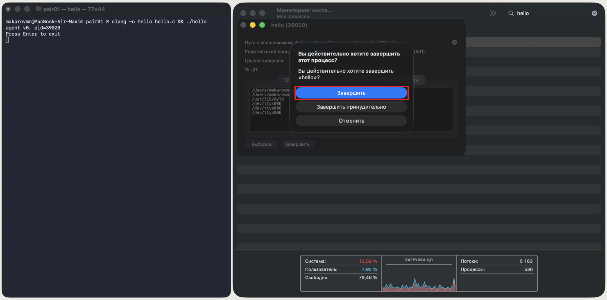
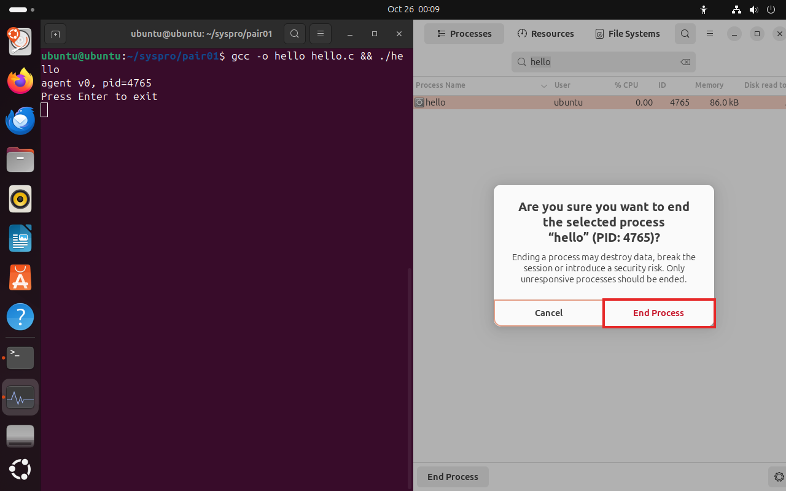
Что на кадреМеню действий с процессом: снять задачу, задать приоритет, открыть расположение файла.
Что изменилосьПроцесс пока работает. Снятие задачи — запрос к ядру завершить чужой процесс; у пользователя на это должны быть права.
Что на кадреОкно «Вы действительно хотите завершить этот процесс?» с тремя кнопками: Завершить, Завершить принудительно, Отменить.
Что изменилосьПроцесс пока работает. «Завершить» отправит ему сигнал
SIGTERM— просьбу закончить работу. «Завершить принудительно» отправитSIGKILL, который процесс перехватить не может.Что на кадреОкно подтверждения: «Are you sure you want to end the selected process “hello” (PID: 4765)?» — «Вы уверены, что хотите завершить процесс?». Предупреждение: завершение может привести к потере данных.
Что изменилосьПроцесс пока работает. Кнопка End Process отправит ему сигнал
SIGTERM— просьбу завершиться. Для немедленной остановки в меню есть пункт Kill: он отправляетSIGKILL, который процесс перехватить не может. -
Посмотрите, что произошло в командной строкеВернитесь в окно командной строки и выполните
echo %ERRORLEVEL%— код, с которым завершился последний процесс.Посмотрите, что произошло в ТерминалеНажмите Завершить, вернитесь в окно Терминала и выполнитеecho $?— код, с которым завершился последний процесс.Посмотрите, что произошло в терминалеНажмите End Process в окне подтверждения и посмотрите на оба окна.Место под кадр · WindowsКомандная строка: программа завершилась без строки «Press Enter» — появилась новая строка приглашения, ниже вывод echo %ERRORLEVEL%; рамка на коде завершения.
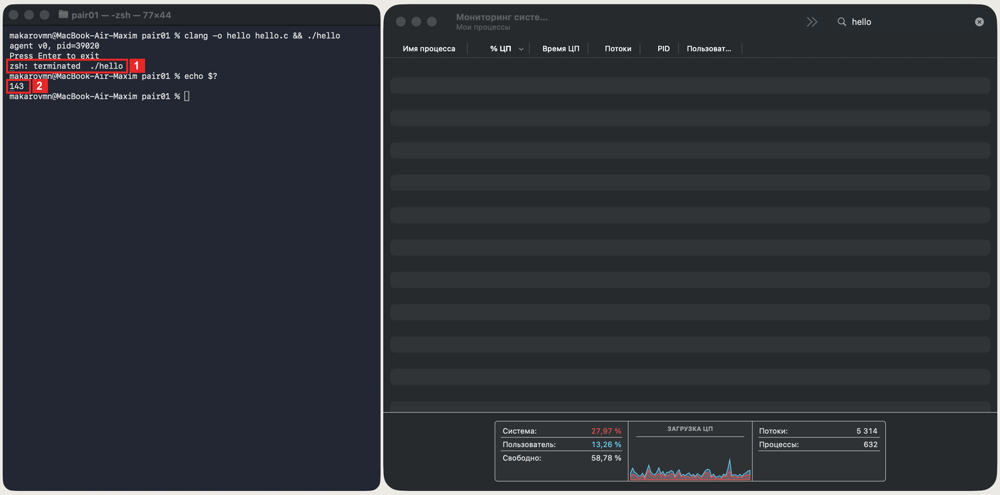
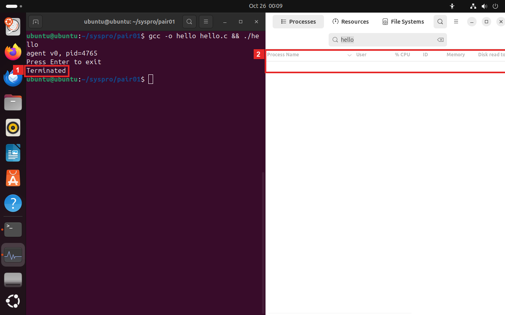
Что на кадреПрограмма закончилась, не дождавшись Enter. Код завершения не равен 0.
Что изменилосьПроцесс исчез из Диспетчера задач. Программа не дошла до строки
return 0: её остановили снаружи, поэтому код завершения другой.Что на кадре1 — сообщение zsh: terminated ./hello: оболочка сообщает, что процесс завершён сигналом. 2 —
echo $?напечатал 143.Что изменилосьПрограмма не дошла до строки
return 0: её остановили снаружи. Код 143 — это 128 плюс 15, номер сигнала SIGTERM. Процесс исчез из Мониторинга системы.Что на кадре1 — в терминале строка Terminated: так bash сообщает, что процесс завершён сигналом SIGTERM. 2 — список в мониторе пуст: процесса с именем hello больше нет.
Что изменилосьПрограмма не дошла до строки
return 0: её остановили снаружи. bash вернул приглашение командной строки, а процесс 4765 исчез из списка. Если сразу выполнитьecho $?, bash напечатает 143 — это 128 плюс 15, номер сигнала SIGTERM.В отчёт. что напечатал терминал и какой код завершения показала команда.
§3Часть 2. Программа на Python
Во второй части тот же номер процесса спрашивает программа на Python через ctypes. Её процесс сравнивается с процессом программы на C.
-
Запустите программу на Python и найдите еёВ командной строке выполните
python hello.py. В Диспетчере задач замените текст поиска наpython.Запустите программу на Python и найдите еёВ Терминале выполнитеpython3 hello.py. В Мониторинге системы замените текст поиска наpython.Запустите программу на Python и найдите еёВ терминале выполнитеpython3 hello.py. В мониторе нажмите Ctrl+F, выделите старый текст Ctrl+A и наберитеhello.py.Место под кадр · WindowsСлева командная строка с выводом «agent v0 (python), pid=…», справа Диспетчер задач с найденной строкой python.exe; рамки на номере и на столбце «Память».
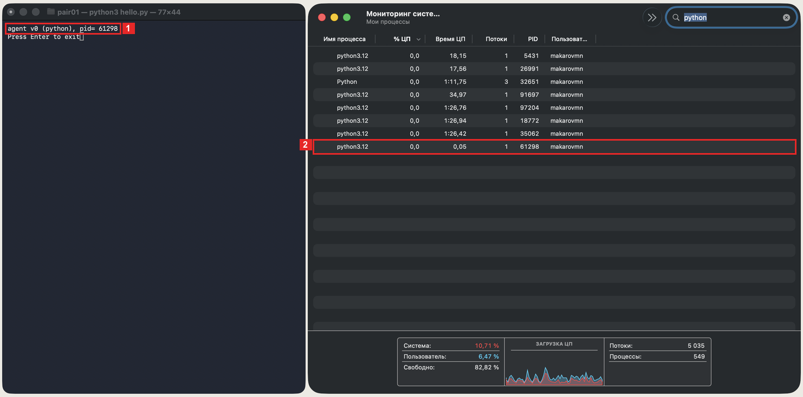
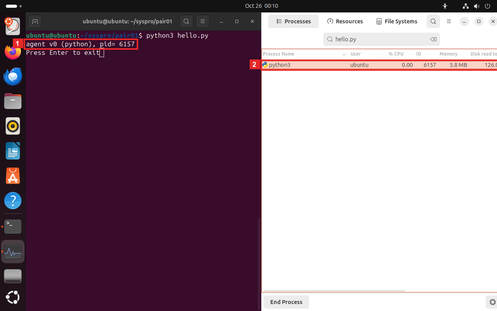
Что на кадреПроцесс
python.exeс тем же номером, что напечатала программа.Что изменилосьПроцесс называется
python.exe: программой стал интерпретатор, а файлhello.pyон читает как данные. Памяти процесс занимает в десятки раз больше, чем программа на C.Что на кадре1 — вывод
pid= 61298. 2 — строкаpython3.12с PID 61298. Выше — другие процессы Python этого пользователя: поиск по словуpythonнаходит все.Что изменилосьПроцесс называется
python3.12: программой стал интерпретатор, а файлhello.pyон читает как данные. Свой процесс среди одноимённых находится только по PID. Командаps -o rss -p <PID>показывает, сколько памяти процесс держит в оперативной памяти: уhelloоколо 1,2 МБ, у Python 8–17 МБ.Что на кадре1 — вывод
pid= 6157. 2 — процессpython3с ID 6157 и памятью 5,8 МБ. Поиск поhello.pyнашёл его, потому что монитор ищет и по командной строке процесса.Что изменилосьПроцесс называется
python3: программой стал интерпретатор, а скрипт он читает как данные. Памяти он занимает 5,8 МБ против 86 кБ у программы на C — примерно в 70 раз больше. Если искать по словуpython3, найдётся иgnome-terminal: в Ubuntu эта команда — тоже сценарий на Python.В отчёт. номер и память процесса Python; во сколько раз памяти больше, чем у программы на C.
-
Сравните библиотеки Python и программы на CВ Process Explorer найдите
python.exeи нажмите Ctrl+D.Сравните библиотеки Python и программы на CВо втором окне Терминала выполните ту же команду для процесса Python, заменив последний фильтр:vmmap <PID> | grep __TEXT | awk '{print $NF}' | grep -E 'python|ctypes' | sort -u.Сравните карту памяти Python с программой на CПри выделенной строкеpython3нажмите Ctrl+M.Место под кадр · WindowsProcess Explorer, панель DLLs для python.exe: python3XX.dll, ucrtbase.dll, библиотеки vcruntime, ntdll.dll, kernel32.dll, KernelBase.dll и другие; рамка на python3XX.dll.
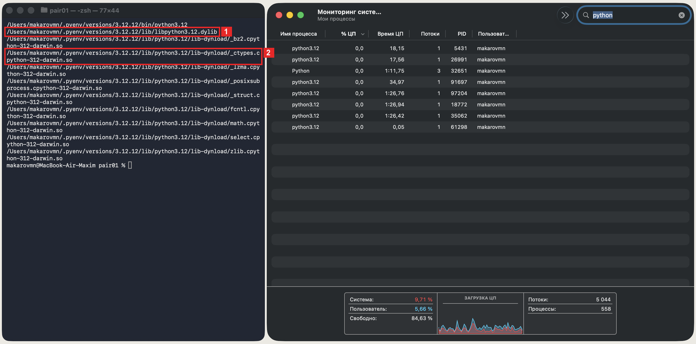
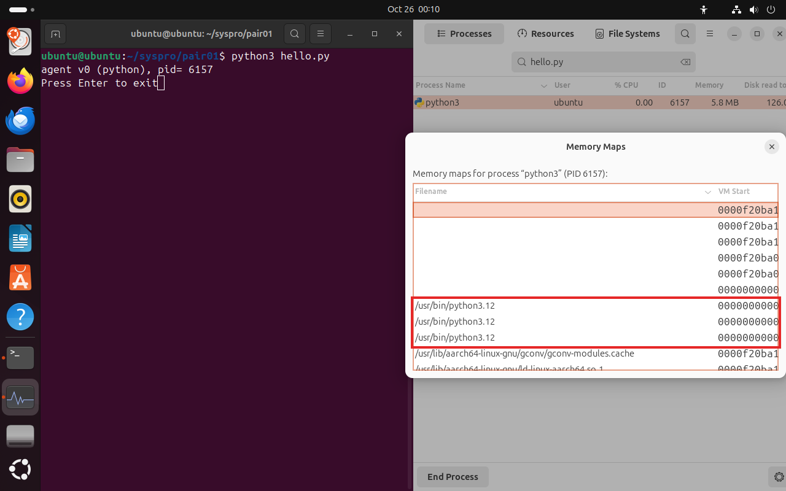
Что на кадреСписок DLL намного длиннее, чем у
hello.exe: сам интерпретаторpython3XX.dll, библиотеки C и модули, которые Python загрузил при старте.Что изменилосьВнизу списка те же
ntdll.dll,kernel32.dllиKernelBase.dll, что у программы на C. Через них Python и вызываетGetCurrentProcessIdизctypes.Что на кадреФайлы Python в памяти процесса: интерпретатор
python3.12, 1 — библиотекаlibpython3.12.dylib, 2 — модуль_ctypes, через который скрипт вызывает системную функцию, и другие модули изlib-dynload. Python на этом компьютере установлен через pyenv, поэтому пути начинаются с~/.pyenv.Что изменилосьКроме тех же системных библиотек, что у программы на C, у Python загружены интерпретатор и его модули. Модуль
_ctypesпередаёт вызовgetpidв ту жеlibSystem, что и программа на C.Что на кадреКарта памяти
python3(PID 6157): интерпретатор/usr/bin/python3.12, таблица кодировокgconv-modules.cache, загрузчикld-linux-aarch64.so.1, ниже —libc.so.6и другие библиотеки.Что изменилосьКарта стала длиннее: в
/proc/6157/maps59 строк против 16 у программы на C. Общее у двух процессов —libc.so.6: через неё и программа на C, и Python черезctypesвызываютgetpid. В Ubuntu 24.04 установлен Python 3.12; для курса понадобится 3.14 с python.org или из пакетов.В отчёт. какая библиотека есть и у программы на C, и у Python.
-
Завершите программу обычным способомВернитесь в командную строку, нажмите Enter и выполните
echo %ERRORLEVEL%.Завершите программу обычным способомВернитесь в Терминал, нажмите Return и выполнитеecho "exit code: $?".Завершите программу обычным способомВернитесь в терминал (Alt+Tab), нажмите Enter и выполнитеecho "exit code: $?".Место под кадр · WindowsКомандная строка: после Enter новая строка приглашения и вывод echo %ERRORLEVEL% — 0; Диспетчер задач без python.exe.
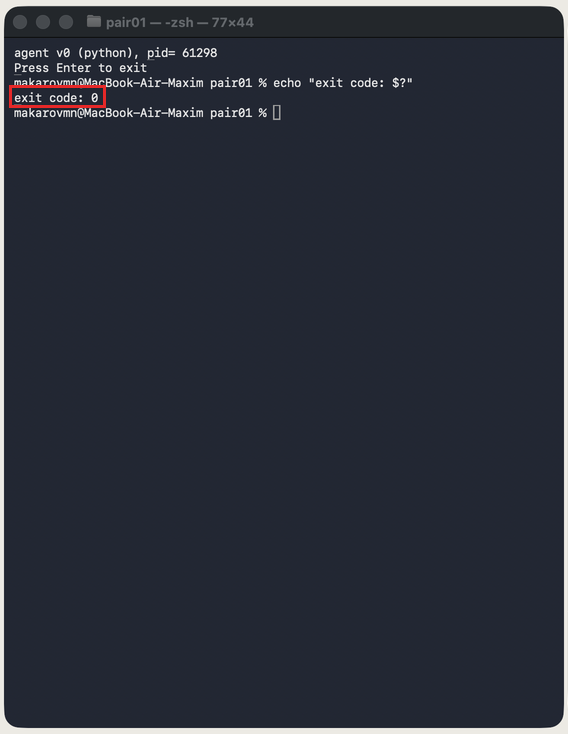
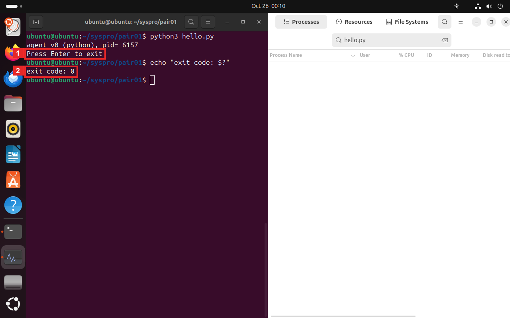
Что на кадреКод завершения 0, процесс исчез из Диспетчера задач.
Что изменилосьПрограмма дошла до конца сама. Код 0 означает «завершилась без ошибок» — в отличие от шага 8, где процесс остановили снаружи.
Что на кадреПосле Return программа завершилась,
echoнапечатал exit code: 0.Что изменилосьПрограмма дошла до конца сама, и код завершения — 0, «без ошибок». На шаге 8 процесс остановили сигналом, и код был 143. Код завершения — первый признак, по которому агент на паре 5 будет отличать нормальное завершение от аварийного.
Что на кадре1 — программа вывела свою строку и после Enter завершилась. 2 —
exit code: 0. Список в мониторе пуст.Что изменилосьПрограмма дошла до конца сама, и код завершения — 0, «без ошибок». На шаге 8 процесс остановили снаружи, и bash написал Terminated. Код завершения — первый признак, по которому агент на паре 5 будет отличать нормальное завершение от аварийного.
В отчёт. код завершения при обычном выходе; чем он отличается от кода на шаге 8.
§4Что получилось
Обе программы делают одно и то же: спрашивают у ядра номер своего процесса и ждут Enter. В мониторе они выглядят по-разному, потому что программа на Python — это интерпретатор, который загружает себя, свои модули и только потом выполняет скрипт.
| Программа на C | Программа на Python | |
|---|---|---|
| Имя процесса в мониторе | hello | python3 |
| Память в мониторе | 86 кБ | 5,8 МБ |
| Строк в карте памяти | 16 | 59 |
| Открытых дескрипторов | 3 | 3 |
| Общая библиотека | libc.so.6 — в ней getpid | |
| Завершение из монитора | Terminated, код 143 | — |
| Обычный выход | — | код 0 |
| Программа на C | Программа на Python | |
|---|---|---|
| Имя процесса в мониторе | hello | python3.12 |
| Потоков | 1 | 1 |
Память в оперативной памяти, ps -o rss | около 1,2 МБ | 8–17 МБ |
| Библиотеки | 44 файла .dylib системы | те же и libpython3.12.dylib, модули Python |
| Общая библиотека | libSystem — в ней getpid | |
| Завершение из монитора | zsh: terminated, код 143 | — |
| Обычный выход | — | код 0 |
Заполните такую же таблицу по своим кадрам: имя процесса, память, число библиотек, код завершения из монитора и при обычном выходе. Числа на разных компьютерах различаются, а соотношение остаётся тем же: интерпретатор занимает в десятки раз больше памяти и загружает больше библиотек.
Всё, что показал монитор, агент курса будет получать своим кодом на C. Номер и память процесса — на парах 4 и 8, открытые файлы и библиотеки — на паре 5, код завершения — на паре 5. Монитор останется прибором для сверки: число в агенте должно совпасть с числом на экране.
§5Отчёт
Скопируйте бланк в файл report.md и замените каждый пропуск ___ своими данными. Текст уже написан, вписываются только числа и имена с вашего экрана.
# ЛР 1. Процесс изнутри Система: ___ · компилятор: ___ (первая строка вывода версии) ## Программа на C Программа напечатала PID ___, монитор показал PID ___. Память процесса в мониторе: ___. Статус: ___, процессорное время: ___. Процессорное время равно нулю, потому что ___. Открытых файлов (дескрипторов): ___, они ведут в ___. Системные библиотеки в процессе: ___. После завершения из монитора терминал напечатал ___, код завершения ___. ## Программа на Python Имя процесса в мониторе: ___, PID ___, память ___. Памяти больше, чем у программы на C, примерно в ___ раз. Общая библиотека у программ на C и Python: ___. Код завершения при обычном выходе: ___. ## Помощник ИИ (Р1) Запрос: «Объясни программу hello.c по строкам». Одно место, где ответ точнее или менее точен, чем глава 0.1: ___. Не получилось: ___ ИИ: не использовал / использовал для ___
Кадры экрана к отчёту не прикладываются: числа в нём проверяются на защите — студент запускает программу и показывает их в мониторе.
§6Проверьте себя
Почему номер процесса в мониторе совпадает с номером, который напечатала программа?
Номер выдаёт ядро при создании процесса. Программа получает его функцией getpid или GetCurrentProcessId, монитор — своими системными функциями. Оба спрашивают у одного ядра про один процесс.
Почему процесс, который ждёт Enter, не тратит процессор?
Функция getchar делает системный вызов чтения, и ядро переводит процесс в состояние ожидания (Sleeping), пока в терминале не появится ввод. Процесс в ожидании не получает процессорного времени.
Почему процесс программы на Python в мониторе называется python3 или python.exe?
Процессом становится исполняемый файл интерпретатора — python3 или python.exe. Файл hello.py интерпретатор читает как данные и выполняет по строкам.
Чем завершение из монитора отличается от выхода по Enter?
По Enter программа доходит до return 0 и завершается сама с кодом 0. Из монитора процесс останавливают снаружи: в Linux и macOS — сигналом, код завершения равен 128 плюс номер сигнала; в Windows — функцией завершения чужого процесса с кодом, отличным от нуля.